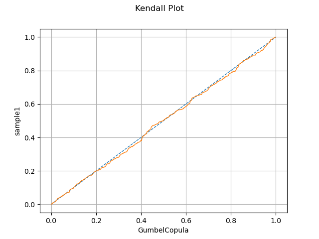
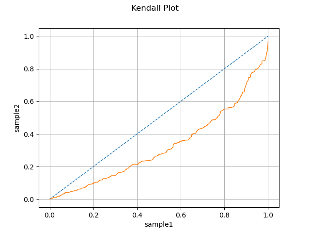
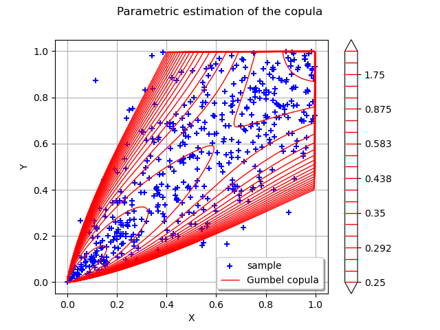

Note
Go to the end to download the full example code.
Test the copula¶
import openturns as ot
import openturns.viewer as viewer
from matplotlib import pylab as plt
ot.Log.Show(ot.Log.NONE)
Copula fitting test using Kendall plot¶
We first perform a visual goodness-of-fit test for a copula with the Kendall plot test.
We create two samples of size 500.
N = 500
dist1 = ot.JointDistribution([ot.Normal()] * 2, ot.GumbelCopula(3.0))
sample1 = dist1.getSample(N)
sample1.setName("sample1")
dist2 = ot.JointDistribution([ot.Normal()] * 2, ot.ClaytonCopula(0.2))
sample2 = dist2.getSample(N)
sample2.setName("sample2")
We change the parameter for the evaluation of ![\Expect{W_i}]() thanks to the
thanks to the ResourceMap :
ot.ResourceMap.SetAsUnsignedInteger("VisualTest-KendallPlot-MonteCarloSize", 25)
We can test a specific copula model for a given sample,
copula_test = ot.GumbelCopula(3)
graph = ot.VisualTest.DrawKendallPlot(sample1, copula_test)
view = viewer.View(graph)

or test whether two samples have the same copula model
graph = ot.VisualTest.DrawKendallPlot(sample1, sample2)
view = viewer.View(graph)

The first test gives a positive result as the blue curve is near the identity line which is not the case for the second test.
Graphical copula validation¶
In this paragraph we visualize an estimated copula versus the data in the rank space.
First we create data
marginals = [ot.Normal()] * 2
dist = ot.JointDistribution(marginals, ot.ClaytonCopula(3))
N = 500
sample = dist.getSample(N)
We build a estimate copula from the previous sample using the ClaytonCopulaFactory :
estimated = ot.ClaytonCopulaFactory().build(sample)
We represent data as a cloud in the rank space :
ranksTransf = ot.MarginalTransformationEvaluation(
marginals, ot.MarginalTransformationEvaluation.FROM
)
rankSample = ranksTransf(sample)
rankCloud = ot.Cloud(rankSample, "blue", "plus", "sample")
We can plot the graph with rank sample and estimated copula :
myGraph = ot.Graph("Parametric estimation of the copula", "X", "Y", True, "upper left")
myGraph.setLegendPosition("lower right")
myGraph.add(rankCloud)
and draw the iso-curves of the estimated copula
minPoint = [0.0] * 2
maxPoint = [1.0] * 2
pointNumber = [201] * 2
graphCop = estimated.drawPDF(minPoint, maxPoint, pointNumber)
contour_estCop = graphCop.getDrawable(0)
# Erase the labels of the iso-curves
contour_estCop.setDrawLabels(False)
# Change the levels of the iso-curves
nlev = 21
levels = [0.0] * nlev
for i in range(nlev):
levels[i] = 0.25 * nlev / (nlev - i)
contour_estCop.setLevels(levels)
# Change the legend of the curves
contour_estCop.setLegend("Gumbel copula")
# Change the color of the iso-curves
contour_estCop.setColor("red")
# Add the iso-curves graph into the cloud one
myGraph.add(contour_estCop)
view = viewer.View(myGraph)

Display figures
plt.show()
Reset default settings
ot.ResourceMap.Reload()